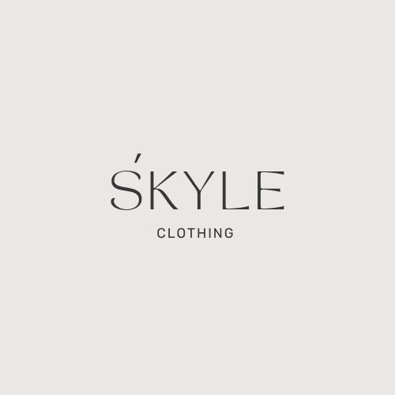

Current Projects
1. Doing the SDGP Project
Our team is working on an innovative SDGP project focused on a personalized vehicle suggestion app designed to streamline the buying experience for diverse user profiles. Tailored to urban environments, incorporating:
- Provide custom vehicle recommendations
- Comparison tool
- Price prediction
2. Developing Own Clothing Brand
"We’re excited to launch Skyle, a sustainable clothing brand dedicated to crafting stylish, oversized casual wear with purpose. At Skyle, we prioritize ethical production and eco-friendly materials to bring you fashion that resonates with both style and responsibility. Our goal is to redefine everyday wear by merging comfort with conscious choices, making each piece a statement of environmental respect and modern design."
